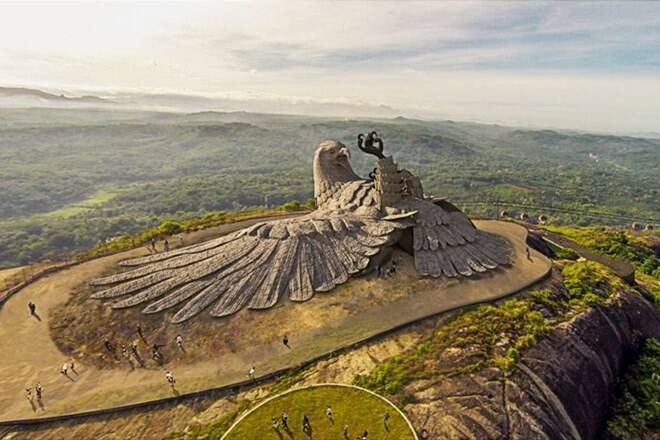
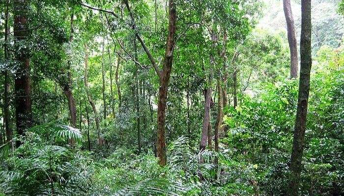

Places To Visit
Jadayu Earth Centre
atayu Earth Center, also known as Jatayu Nature Park or Jatayu Rock, is a park and tourism centre at Chadayamangalam in Kollam district of Kerala.
Thangassery Lighthouse

Thangassery Lighthouse can be seen rising up majestically above the coconut trees. The cylindrical lighthouse tower is painted in catchy red and white.
Punalur Suspension Bridge
The Punalur Suspension Bridge, located in Punalur is the oldest motorable Bridge in Kerala, which was built by Travancore Government.
Popular Things To Do
Canoeing in Munroe Island
anoeing through Munroe Island.Munroe Island or Mundrothuruthu is an inland island located at the confluence of Ashtamudi Lake and the Kallada River.
ATV Rides & Bike Tour
Level up your Kollam vacation by including exhilarating activities like ATV rides, bike tours, and trekking in your itinerary. Explore the lanes of Kollam by hiring a bike.
Wildlife Tour
If you are an animal lover and love to see them in their natural habitat then Shendurney Wildlife Sanctuary is a must-visit place.